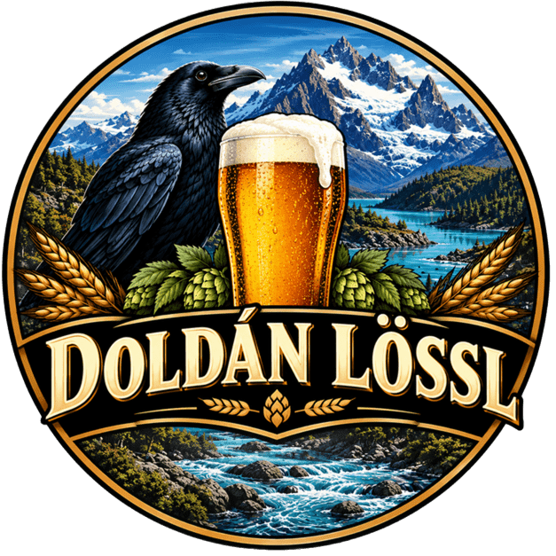

Doldán Lössl
Cerveza artesanal, hecha en casa con paciencia y oficio.
100% Artesanal
3 Variedades
Hecho en casa
Nuestra Historia
"Empecé cocinando cerveza para mí, en casa. Nunca pensé que un día la ibas a poder tomar vos."
En 2006, después de realizar un curso de elaboración de cerveza artesanal, comenzamos a cocinar nuestros primeros lotes en casa, utilizando equipamiento casero y materias primas de la Patagonia. Con mucho esfuerzo y dedicación, participamos en concursos de cerveceros caseros: obtuvimos el tercer lugar con una Kölsch y una mención de honor por una Sweet Stout. Aquellos reconocimientos nos impulsaron a seguir perfeccionando cada receta.
Entonces, elegimos concentrarnos en tres estilos: Stout, Kölsch e IPA Argenta. Lo que nació como una manera de compartir cerveza en cenas, almuerzos y reuniones familiares se transformó en una pasión y en una forma de vida. Elaboramos de manera artesanal, respetando los tiempos y utilizando únicamente ingredientes naturales, sin agregados industrializados, para transmitir en cada cerveza la esencia de la Patagonia argentina.